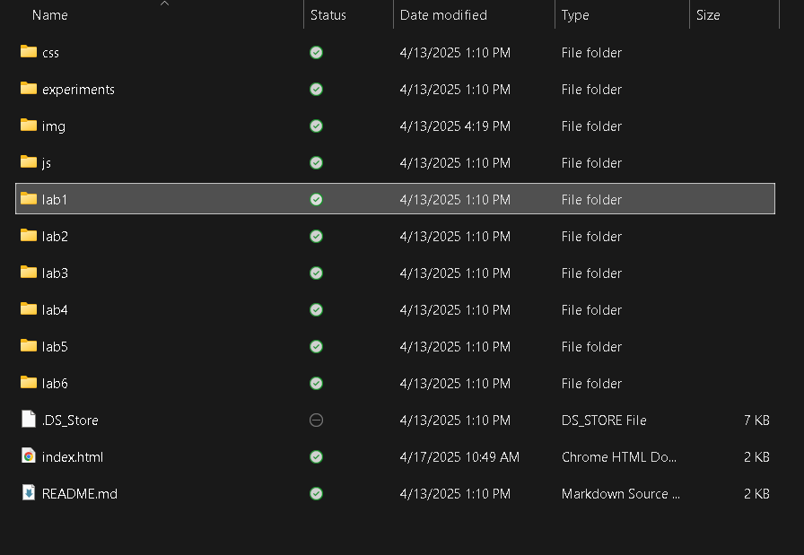
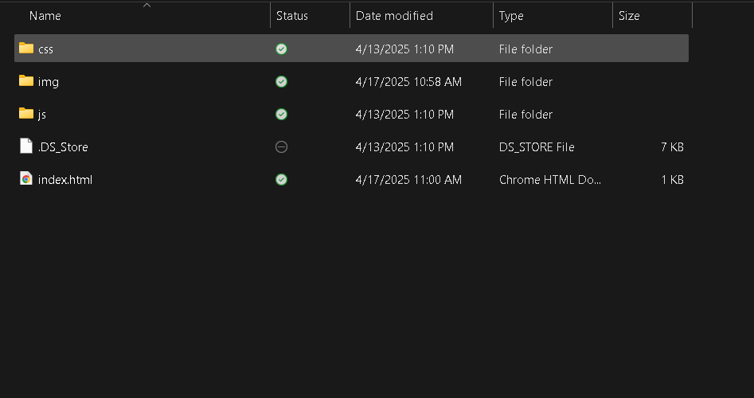

The idea of this lab was to further create a local file structure on my computer and add index.html files
There wasnt much challenge as I used the template that was given, but i ran into some issues with the links because I wasn't paying attention to capitalization but found the mistake and corrected it.
Bellow are the results of my made file structure, the img, css, js, and index.html files are all there but I am unable to show them in one picture so they are split up into two.
 